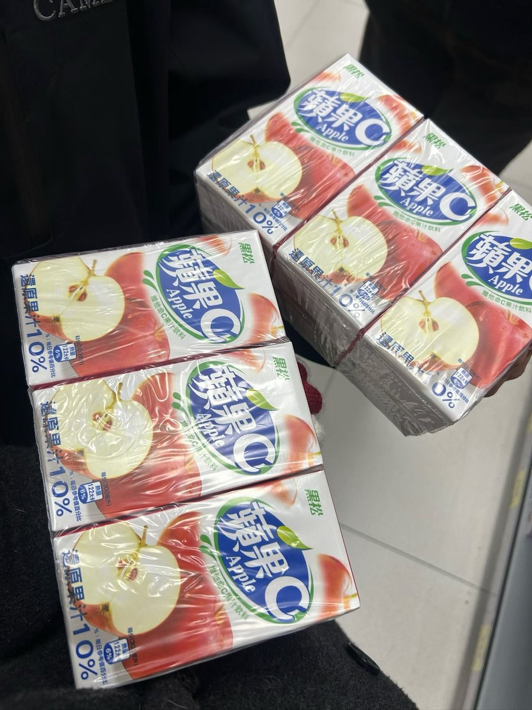
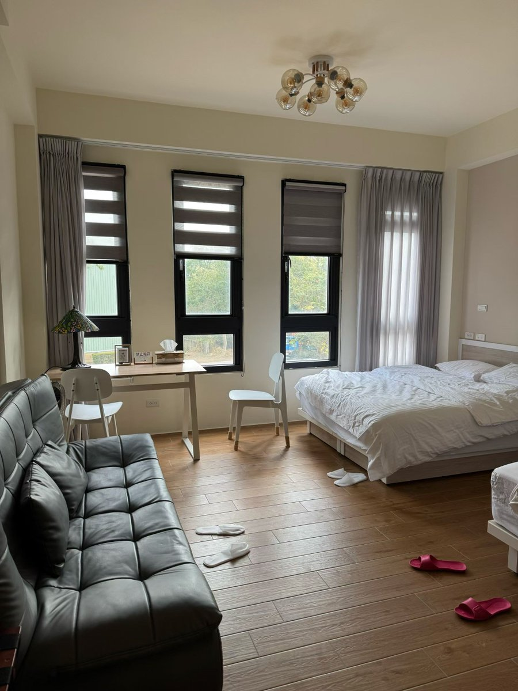

奶昔🥤
@realNyarime
听说上海推友也可以来玩了，来厦门坐船半小时就到了，有种身处孤岛的感觉，想找个地方来静静、远离城市的喧嚣可以来。
黑松沙士很难喝，他家的苹果汁还不错。岛上民宿一般，逛完至少得2天，除非是特种兵。主要是没有落地签，每次入金证审批要2-3天。好在天气不是很糟糕，没有停航也没有滞留风险。
心情不好就刮刮彩票，或者去岸边眺望祖国的一国两制标示。如果说黄厝海滩能漫游台湾电信业者，那小金门列屿也可以让你摆脱漫游状态。

